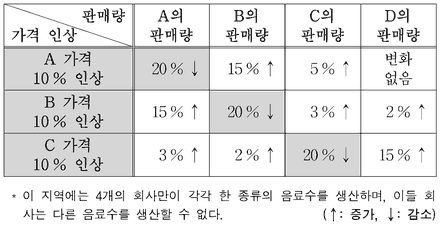

기업 결합 심사
지문을 먼저 읽고, 이해가 막히는 문단에서 ‘그림으로 보기’를 누르세요. 그림은 문단을 따라 바뀝니다.
1문단둘 이상의 기업이 자본과 조직 등을 합하여 경제적으로 단일한 지배 체제를 형성하는 것을 ‘기업 결합’이라고 한다. 기업은 이를 통해 효율성 증대나 비용 절감, 국제 경쟁력 강화와 같은 긍정적 효과들을 기대할 수 있다. 하지만 기업이 속한 사회에는 간혹 역기능이 나타나기도 하는데, 시장의 경쟁을 제한하거나 소비자의 이익을 ㉠침해하는 경우가 그러하다. 가령, 시장 점유율이 각각 30%와 40%인 경쟁 기업들이 결합하여 70%의 점유율을 갖게 될 경우, 경쟁이 제한되어 지위를 ㉡남용하거나 부당하게 가격을 인상할 수 있는 것이다. 이 때문에 정부는 기업 결합의 취지와 순기능을 보호하는 한편, 시장과 소비자에게 끼칠 ㉢폐해를 가려내어 이를 차단하기 위한 법적 조치들을 강구하고 있다. 하지만 기업 결합의 위법성을 섣불리 판단해서는 안 되므로 여러 단계의 심사 과정을 거치도록 하고 있다.
2문단이 심사는 기업 결합의 성립 여부를 확인하는 것부터 시작한다. 여기서는 해당 기업 간에 단일 지배 관계가 형성되었는지가 ㉣관건이다. 예컨대 주식 취득을 통한 결합의 경우, 취득 기업이 피취득 기업을 경제적으로 지배할 정도의 지분을 확보하지 못하면, 결합의 성립이 인정되지 않고 심사도 종료된다.
3문단반면에 결합이 성립된다면 정부는 그것이 영향을 줄 시장의 범위를 ㉤획정함으로써, 그 결합이 동일 시장 내 경쟁자 간에 이루어진 수평 결합인지, 거래 단계를 달리하는 기업 간의 수직 결합인지, 이 두 결합 형태가 아니면서 특별한 관련이 없는 기업 간의 혼합 결합인지를 규명하게 된다. 문제는 어떻게 시장을 획정할 것인지인데, 대개는 한 상품의 가격이 오른다고 가정할 때 소비자들이 이에 얼마나 민감하게 반응하여 다른 상품으로 옮겨 가는지를 기준으로 한다. 그 민감도가 높을수록 그 상품들은 서로에 대해 대체재, 즉 소비자에게 같은 효용을 줄 수 있는 상품에 가까워진다. 이 경우 생산자들이 동일 시장 내의 경쟁자일 가능성도 커진다.
4문단이런 분석에 따라 시장의 범위가 정해지면, 그 결합이 시장의 경쟁을 제한하는지를 판단하게 된다. 하지만 설령 그럴 우려가 있는 것으로 판명되더라도 곧바로 위법으로 보지는 않는다. 정부가 당사자들에게 결합의 장점이나 불가피성에 관해 항변할 기회를 부여하여 그 타당성을 검토한 후에, 비로소 시정 조치 부과 여부를 최종 결정하게 된다.
<보기>는 어느 지역의 4가지 음료수 A～D에 대한 소비자의 구매 성향을 조사한 결과이다. 위 글에 비추어 볼 때 적절한 반응은?
